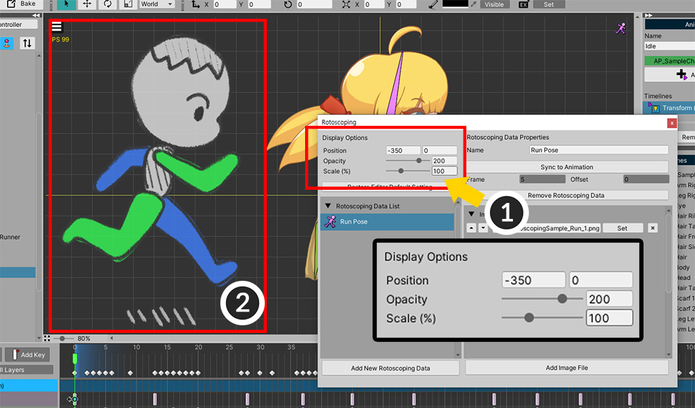
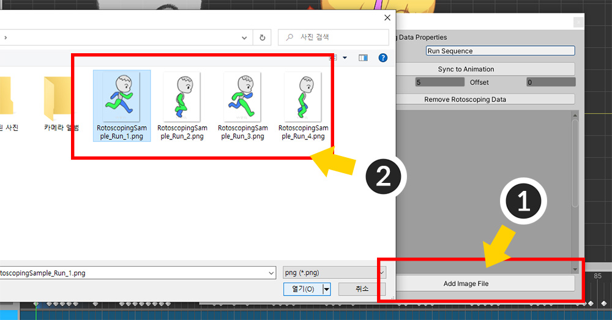
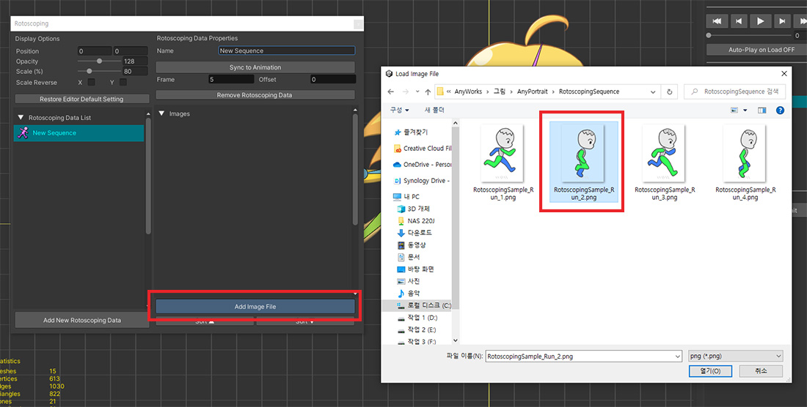
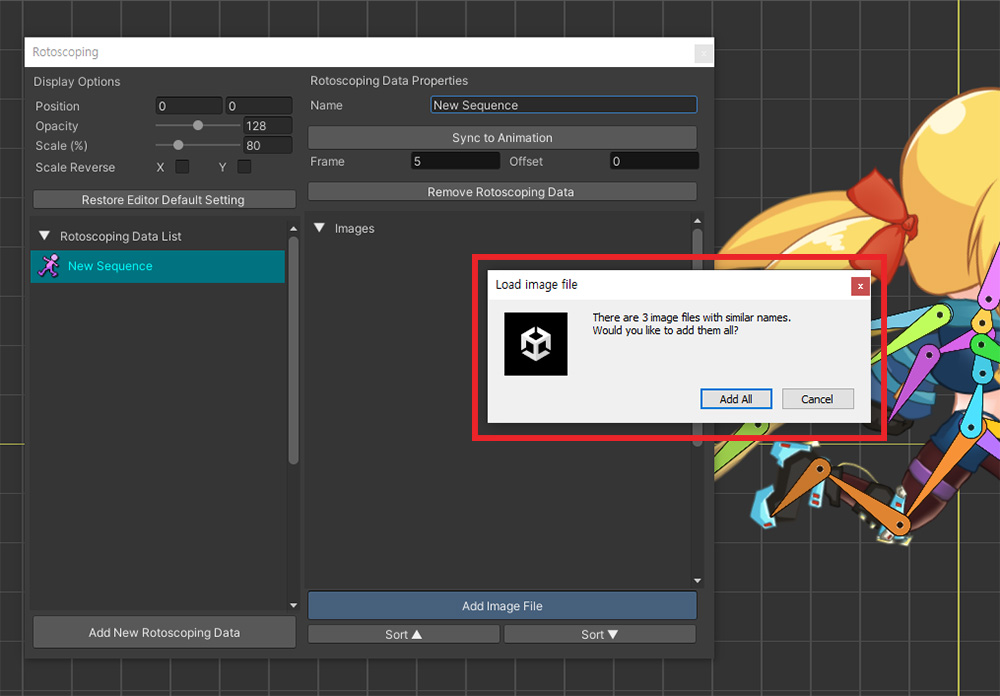
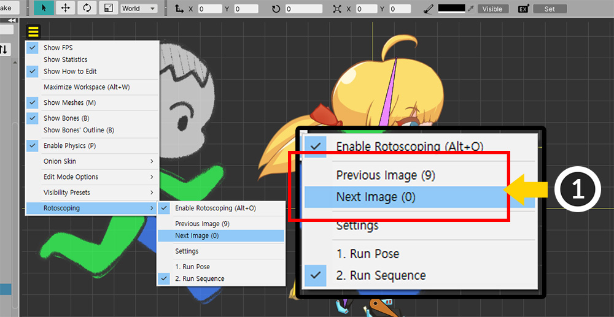
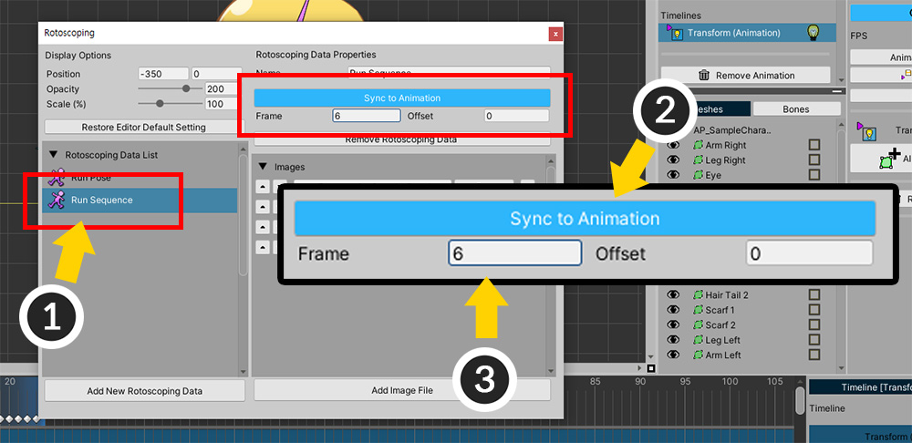
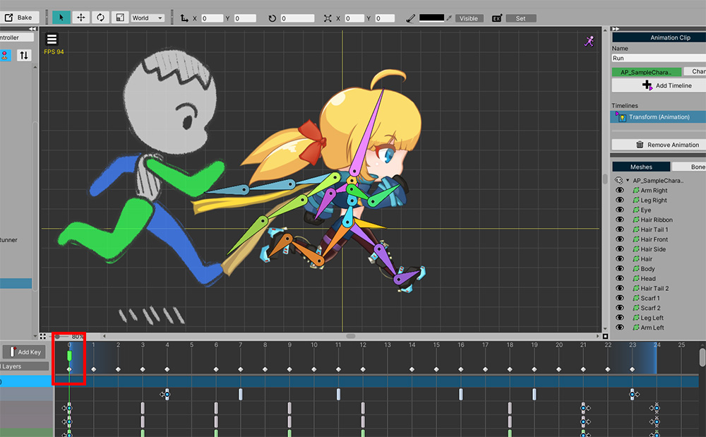
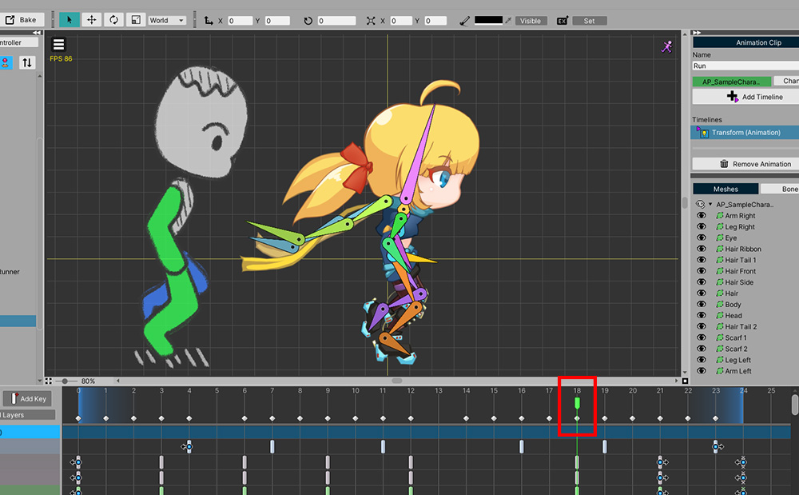
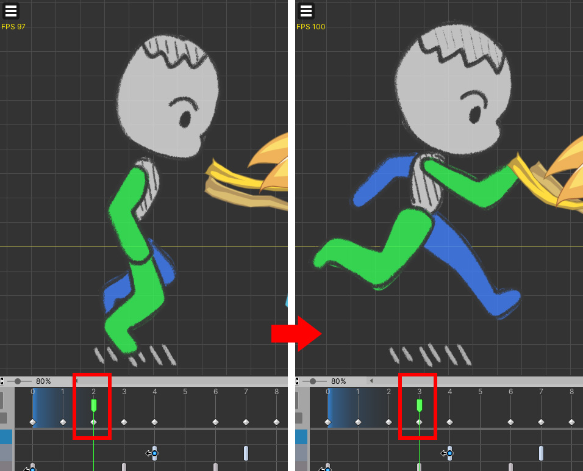

AnyPortrait > 메뉴얼 > 로토스코핑
로토스코핑
1.4.7
로토스코핑(Rotoscoping)은 실사 이미지나 영상을 프레임단위로 참조하여 애니메이션을 만드는 기법을 말합니다.
이를 이용하면 실제와 같은 움직임을 더 효과적으로 만들 수 있습니다.
마찬가지로, 여러분이 참조할만한 사진이나 이미지들을 보면서 애니메이션을 만들 수 있는 기능이 있으면 좋을 것입니다.
이 페이지에서는 로토스코핑 기법의 아이디어에서 착안된 기능을 소개합니다.

달리는 캐릭터가 그려진 4개의 이미지들을 준비했습니다.
여기서는 간단히 그려진 이미지들로 설명을 하지만, 사진을 이용하는 것도 좋은 방법입니다.
이제 이 이미지들을 작업 공간에 로드하여 보면서 작업할 수 있게 만들어 봅시다.

(1) 보기 메뉴를 엽니다.
(2) Rotoscoping 메뉴를 선택합니다.
(3) 아직 어떤 이미지를 로드할지 설정하지 않았으므로, Rotoscoping > Settings을 선택합니다.

로토스코핑 설정 화면입니다.
1. Display Options : 외부의 이미지들이 작업 공간에 어떻게 표시될지 설정합니다.
2. Restore Editor Default Setting : Display Options을 초기화합니다.
3. Rotoscoping Data List : 작성된 로토스코핑 데이터들이 나타나는 목록입니다.
4. Add New Rotoscoping Data : 새로운 로토스코핑 데이터를 만듭니다.
5. Name : 로토스코핑 데이터의 이름을 정할 수 있습니다.
6. Animation 속성 : 애니메이션의 프레임과 동기화하여 자동으로 이미지들이 전환되도록 만들 수 있습니다.
7. Remove Rotoscoping Data : 선택된 로토스코핑 데이터를 삭제합니다.
8. Images : 선택된 로토스코핑 데이터에 포함된 이미지들입니다.
9. Add Image File : 외부의 이미지 파일을 선택된 로토스코핑 데이터에 추가합니다.

새로운 로토스코핑 데이터를 만들고 이미지를 로드해봅시다.
(1) Add New Rotoscoping Data 버튼을 누릅니다.
(2) 새로운 로토스코핑 데이터가 생성되었습니다. 로토스코핑 데이터를 선택합니다.
(3) 로토스코핑 데이터의 이름을 설정합니다.

(1) Add Image File 버튼을 누릅니다.
(2) 준비된 이미지 파일 한개를 선택하고 로드합니다.
이제 이 로토스코핑 데이터를 이용하면 이미지 파일을 작업 공간에 표시할 수 있습니다.
로토스코핑 설정창을 닫습니다.

(1) 다시 보기 메뉴를 엽니다.
(2) Rotoscoping 메뉴를 열면 생성된 로토스코핑 데이터가 추가된 것을 볼 수 있습니다.
(3) Enable Rotoscoping (단축키 Alt+O )을 누릅니다.
(4) 로토스코핑 데이터가 선택되지 않았다면, 보기 메뉴에서 로토스코핑 데이터를 선택합니다.

설정했던 이미지가 작업 공간에 나타나는 것을 볼 수 있습니다.

여러분의 작업 방식에 맞게 이미지의 위치나 크기, 불투명도를 변경하는 것도 가능합니다.
(1) 로토스코핑 설정을 열고, Display Options의 항목들을 적절하게 변경합니다.
(2) 이미지의 위치, 불투명도, 크기가 변하는 것을 볼 수 있습니다.

AnyPortrait v1.4.7에서 추가된 옵션을 이용하면 X, Y축에 대해서 크기를 반전할 수 있습니다.
여러개의 이미지 파일들을 로드하기

여러개의 이미지 파일들을 열어서 참조하는 것도 가능합니다.
새로운 로토스코핑 데이터를 만들어서 여러개의 이미지 파일들을 로드해봅시다.
(1) 로토스코핑 설정을 열고, Add New Rotoscoping Data 버튼을 누릅니다.
(2) 새로운 로토스코핑 데이터가 생성되었습니다.
(3) 로토스코핑 데이터의 이름을 설정합니다.

(1) Add Image File 버튼을 눌러서 (2) 이미지 파일을 로드합니다.
이 작업을 반복하여 준비된 4개의 이미지 파일을 모두 엽니다.
유사한 이름의 파일들을 한번에 열기
1.4.7

열고자 하는 연속된 이미지 파일들의 이름이 숫자를 제외하고 같다면, 한번에 열 수 있습니다.
폴더 내에 숫자 이름을 제외한 이름이 동일한 4개의 파일이 있습니다.
이 파일들 중에서 하나를 선택합니다.

폴더 내에 연속된 이미지로 보이는 파일들이 있다면 위와 같은 메시지가 보여집니다.
Add All 버튼을 누르면, 그 폴더 내의 유사한 이름의 모든 이미지 파일들이 한번에 추가됩니다.

폴더 내의 4개의 이미지 파일들이 한번에 추가된 것을 볼 수 있습니다.

정렬 버튼을 눌러서 이미지 파일들을 이름순으로 빠르게 정렬할 수 있습니다.

(1) 4개의 파일들이 로토스코핑 데이터에 추가되었습니다.
이미지 파일 로드 정보를 수정하고자 한다면 아래의 UI들을 이용하세요.
(2) 순서를 바꾸고자 한다면 위, 아래 버튼을 누르면 됩니다.
(3) 파일의 이름과 경로입니다.
(4) Set 버튼을 눌러서 다른 이미지 파일을 로드할 수 있습니다.
(5) 삭제 버튼입니다.

위와 같은 방법으로 로토스코핑 데이터를 적용해봅시다.
로토스코핑 설정을 끄고 보기 메뉴를 엽니다.
(1) 작성한 로토스코핑 데이터를 선택합니다.
(2) Rotoscoping > Enable Rotoscoping을 누릅니다.

(1) 보기 메뉴에서 Previous Image, Next Image (단축키 숫자키 9, 0 )를 눌러서 이미지를 전환할 수 있습니다.

이제 작업 공간에서 4개의 이미지파일들을 하나씩 보면서 애니메이션을 만들 수 있습니다.
애니메이션과 동기화하여 자동으로 이미지 전환하기

애니메이션이 재생되면서 자동으로 이미지가 전환된다면 더 효율적인 작업이 가능할 것입니다.
(1) 대상이 되는 애니메이션은 총 24프레임이며, 4개의 키 포즈(Key-Pose)를 가집니다. 즉, 6 프레임 간격으로 키 포즈가 바뀌는 것입니다. (6 프레임을 기억해둡시다.)
(2) 이 애니메이션과 방금 만든 로토스코핑 데이터가 동기화되도록 만들어봅시다.

(1) 로토스코핑 설정을 열고, 방금 만든 로토스코핑 데이터를 선택합니다.
(2) Sync to Animation 버튼을 눌러서 동기화 기능을 활성화합니다.
(3) Frame을 6으로 설정합니다.




로토스코핑을 켜고 애니메이션을 재생해보면 위와 같이 자동으로 로토스코핑 이미지가 전환되는 것을 볼 수 있습니다.

만약 애니메이션의 첫 키포즈의 프레임이 0이 아니라면, 시작 위치를 변경해야합니다.
로토스코핑 설정을 열고 Offset을 적절하게 변경합니다.

이제 첫번째 로토스코핑 이미지의 기준 프레임이 Offset에 맞게 변경된 것을 볼 수 있습니다.